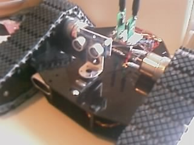
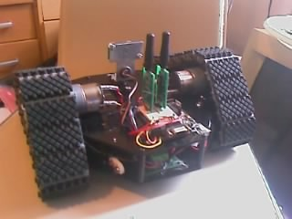
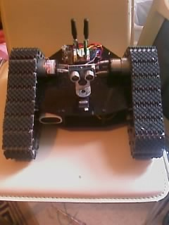
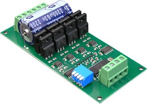
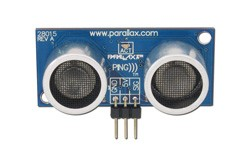
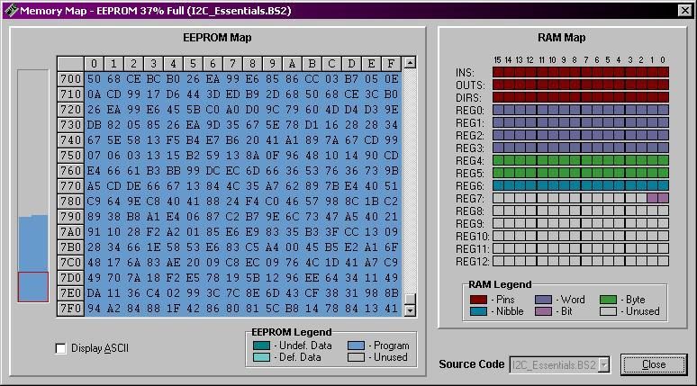

John - Some Basics
Right it's been a little while since my last post, but John is now alive and functional, albeit with some drawbacks for the moment. Here's a few pics I took a minute ago of John as he stands:

In this next one you can just about see the motor controller board - it's sitting on the lower level


The brain is that of a BASIC STAMP 2 from Parallax (which is actually a PIC with some extra hardware to provide a easier interface to program), I'm using the board from my Toddler robot as I only have two stamps, and the other one is in my development board. The toddler board is great because it has a surface mount BS2, a prototype area (breadboard), several servo connections mapped internally to the stamp's IO pins, a reset button, three way power switch allowing you to not provide power to the servo connectors, and a programming connector (serial cable - rs232) all on one small board. Unfortunately the toddler takes a +6v supply which is then regulated to 5v within the stamp itself, leaving both +6v and +5v on different headers. Usually the 6v comes from the 3xAA battery holder in the toddler, I don't want to use that though so for now I've got my own 5v regulator on the toddler board which feeds the stamp from a 9v battery. I have a couple of cheap re
mote control monster trucks that use a 6v source, and they have a battery pack and recharger, so I will be chopping one of those out to use soon. It's all about the rechargeable battery packs.
The motors themselves are powered by a 7.2v Ni-Cd battery at 1800mA through a very nice dual H-Bridge, which I bought this time rather than making my own. Its a M22 made by Devantech, a English manufacturer, and it's got a whole bunch of nice features. You can't really see it in those pics above so here's a picture of it:
 <-- rawr!
This can take motors that require up to 50v and up to 5A per motor without a heat sink. Fine for John's requirements. It is capable of multiple different modes of operation, including straight analog control over each motor, RC mode which allows the motors to act like servos ( speed set by pulses at
different frequencies) or I2C mode which uses the popular Phillips I2C p
rotocol for complete programmatic control over every aspect of the motors, which is what I will be using for John. I will be adding some more I2C devices later as well.
The biggest benefit using DC motors rather than servos is that once you tell the motors to do something, they go off and do it until you tell them to stop - servos require the same pulse frequency to be sent every certain time period, usually about 25ms. This makes coding more tricky when the project is quite advanced, as you have to make sure the pulses are sent around all the other processing that's happening. Great fun with you have 4+ servos. Using motors frees up the code to do other things all the time, which can only be good! You can however buy or make a dedicated servo controller board (co-processor) which frees up this restraint in the same way. I will be using a servo controller board when I get a robotic arm for John.
Next up is sensors - for the time being John just has one sensor, which is an ultrasonic range finder capable of finding distances up to 3 meters, and it uses just one IO pin! You can see it in the pictures, it looks like John's "eyes". The Ping))) works on the same principal as a sonar - an ultrasonic pulse is transmitted, and the distance is measured by timing how long it takes to echo back. I have this mounted on a standard hobby servo, capable of 180 degree rotation, allowing the "eyes" to point in different directions and take distance readings.
<-- echo, echo, echo!
One of John's biggest problem at the moment is being able to see in front of the actual tracks - finding walls and objects straight ahead is one thing, but it doesn't cover an area wide enough in front of John for all situations. This job is well suited to infrared sensors or "whisker" type application, however it's going to be tricky to get anything mounted down there, but will be necessary soon.
You might have noticed the two antenna sticking up in the air - these are radio frequency transmitter and receiver modules, and will be used for communications across the airwaves to other circuits - they aren't currently being used in John but they are hooked up and ready - just need to be coded and have something to talk to.
<-- bad boys
That's about it at the moment for hardware. Currently have a simple program which tests all the systems, which allows John to roam around a bit, and when detecting a wall at 30cm he will pivot right until they way is clear to move forward. It's not very impressive but more a framework of lower level routines to get all the systems running, ie I2C communications and Ping))) distance acquisition. The motors themselves are capable of some quite high speed and torque, however for inside testing use I have him set to "caution" speed, otherwise I have to dive around the house trying to catch him before any disaster strikes. The torque is indeed quite powerful, John easily drives straight over anything that gets in his way, which can result in toppling over backwards and wrecking all the electronics (as almost happened this morning whilst driving over the N64 with Goldeneye in it). This can be avoided by fitting an accelerometer which measures tilt - I have one lying around somewhere that I might fit and try out.
One of the things I like most about the tracks is the ability to almost pivot on the spot - it can often be difficult to turn around without hitting other stuff but this does it really well.
I have attached the program I'm currently using. It's wrote in PBASIC and isn't the most efficient at the moment. PBASIC has several limitations such as having no subroutines/functions (GOSUB and GOTO for the win) and GOSUB will only nest 4 levels which can make it difficult to re-use a lot of the code. Another limitation with the STAMP is that it doesn't have a great deal of RAM to play with - in this example I'm already using a chunk:

In order to minimize memory usage, I will need to share variables where possible which can be tricky if you're not careful, not to mention making reading the code much harder to follow. I will be using basic subsumption architecture (fancy state machine) which will allow different movement patterns to be stored in the EEPROM and free up some space.
That's it for now, next up I will be looking at either getting some sensors in front of the tracks and in the centre lower down, or RF communication with the PC. I also have a ancient NES pad which I might hack and use it to remote-control john using another circuit and RF communications. I will also be designing a state machine and will have a lot of code to write ! Nex time I post I will upload a video and the schematics too (yay!)